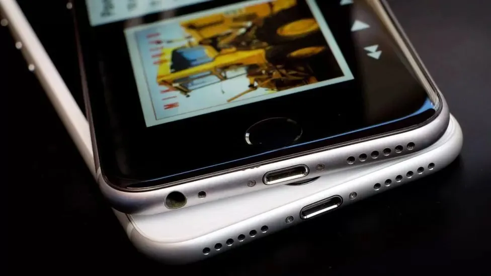

Apple pays out over claims it deliberately slowed down iPhones
08.01.2024
Apple has begun making payments in a long-running class action lawsuit over claims it deliberately slowed down certain iPhones in the US.
Complainants will receive a cut of a $500m (£394m) settlement which works out to around $92 (£72) per claim.Apple agreed to settle the lawsuit in 2020, stating at the time it denied any wrongdoing but was concerned with the cost of continuing litigation.
A similar case under way in the UK is seeking £1.6bn in compensation.
It said that as batteries aged, their performance decreased, and so the "slowdown" lengthened the phones' lifespan.
It said that as batteries aged, their performance decreased, and so the "slowdown" lengthened the phones' lifespan.
But it was accused of throttling the performance of certain iPhones without telling its customers, and the uproar resulted in Apple offering a cut-price battery replacement to fix the problem.
It led to the US legal action. At the time of the settlement, it was estimated that each person might receive as little as $25 each but the actual pay-out appears to be almost four times that sum.
In the UK, Apple lost a bid to block a similar mass action lawsuit last November.
Related Topics
27 December.2023
18 December.2023